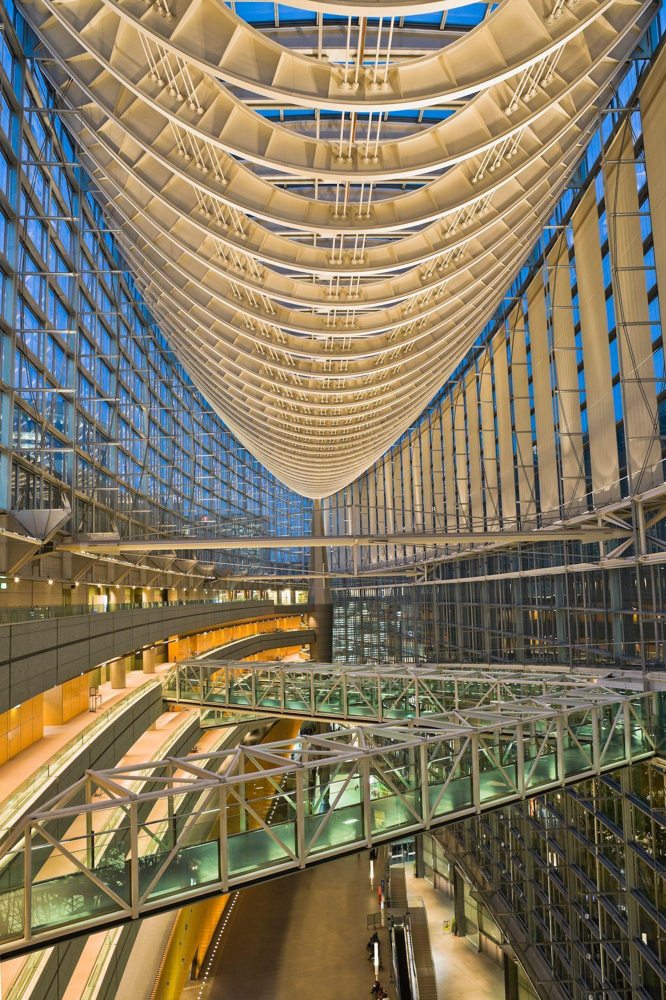
Estructura expresiva
Los elementos resistentes forman parte de la identidad visual del edificio.
1944–2023
Un legado arquitectónico que trasciende el tiempo
“Hay estructuras que transforman el paisaje y dejan ideas que continúan viajando a través del tiempo”.
Explorar su legado ↓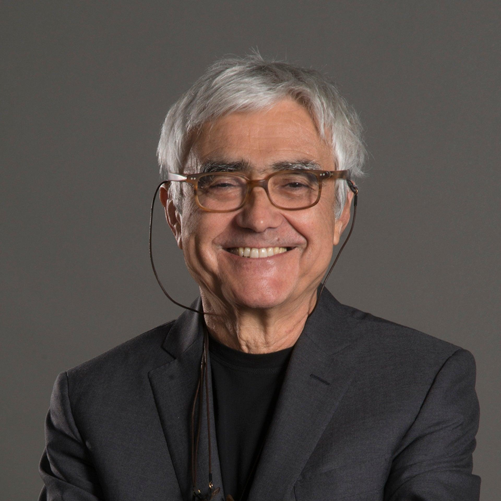
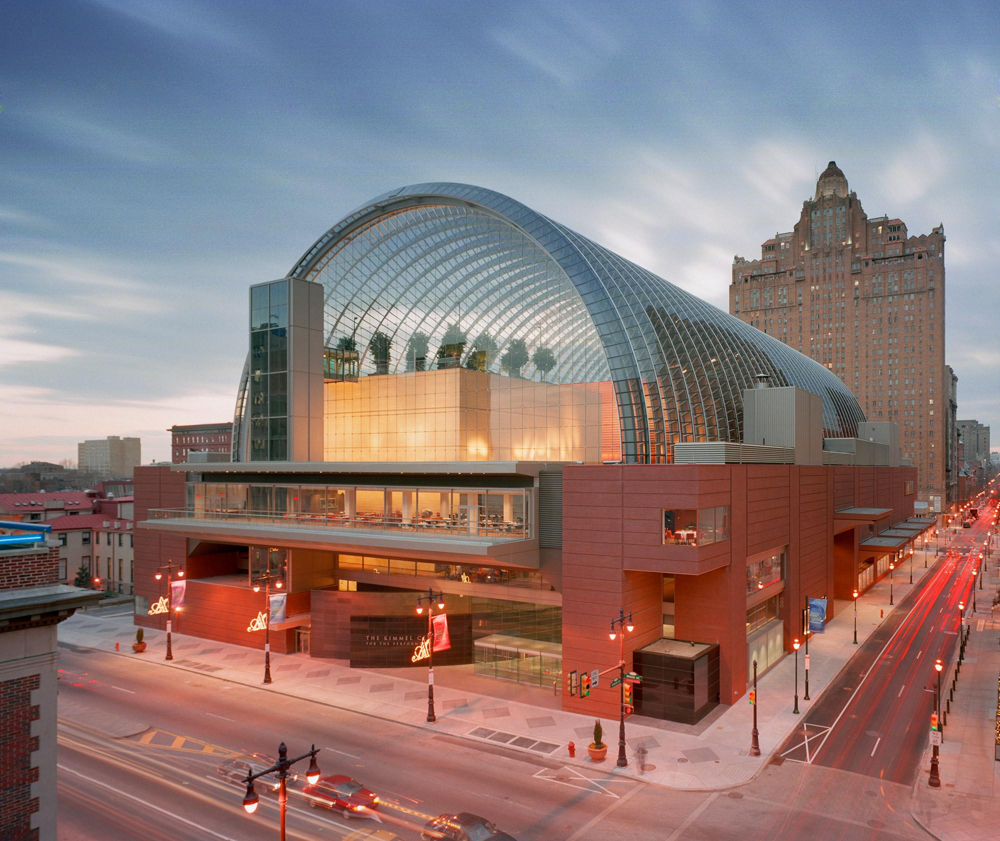
01 — Biografía

Rafael Viñoly fue un arquitecto uruguayo reconocido internacionalmente por sus diseños innovadores y sus estructuras de gran escala. Nació el 1 de junio de 1944 en Montevideo, Uruguay, y estudió Arquitectura en la Universidad de Buenos Aires, donde se graduó en 1969.
En 1979 se trasladó a Estados Unidos y posteriormente fundó su propio estudio, Rafael Viñoly Architects. A lo largo de su carrera desarrolló proyectos culturales, educativos, residenciales y corporativos en diferentes países.
Su arquitectura se caracterizó por integrar la ingeniería, la geometría y la expresión artística. Falleció el 2 de marzo de 2023 en Nueva York, dejando un legado que continúa presente en la arquitectura contemporánea.
02 — Visión arquitectónica
La arquitectura de Viñoly buscaba integrar la estructura, la forma y el espacio. Sus obras destacan por el uso de grandes dimensiones, la iluminación natural, la transparencia y las geometrías distintivas.

Los elementos resistentes forman parte de la identidad visual del edificio.
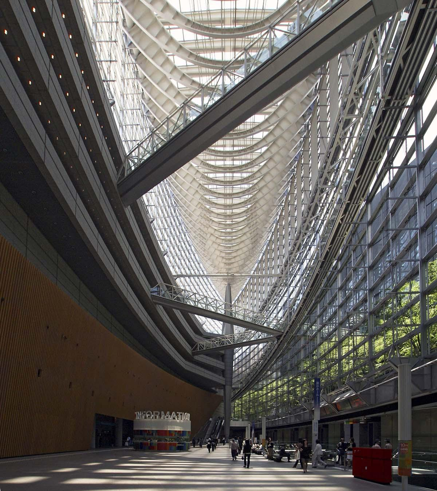
El vidrio favorece la iluminación y la conexión entre interior y exterior.
Las curvas y formas singulares crean composiciones reconocibles.
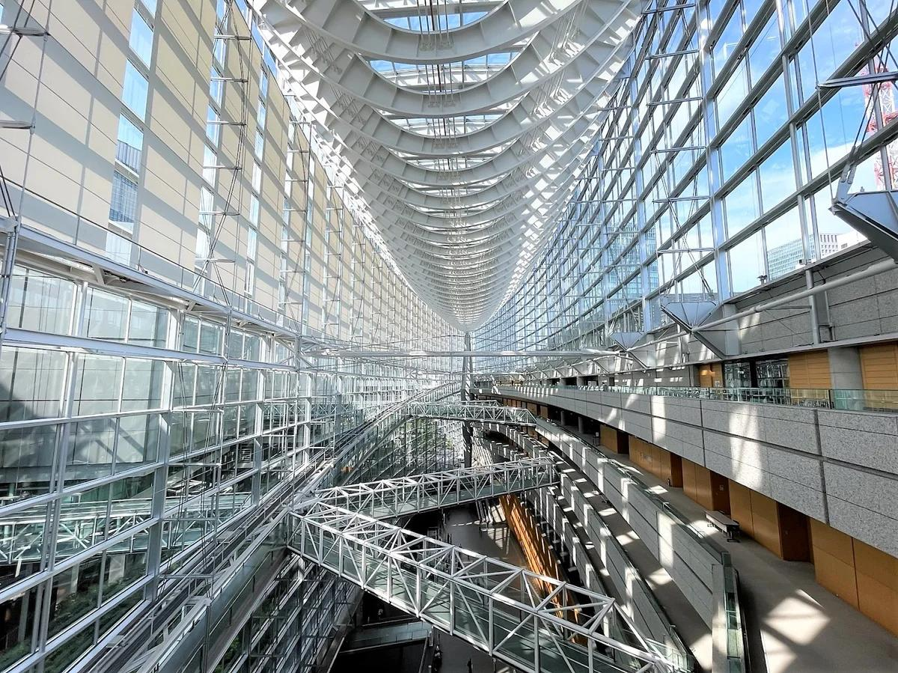
Sus proyectos buscan transformar la experiencia de quienes los recorren.
“En su arquitectura, la ingeniería se convierte en una herramienta de expresión”.
03 — Obras destacadas
Complejo cultural y de convenciones reconocido por su gran atrio de acero y vidrio, cuya cubierta evoca el casco de un barco. Su diseño combina transparencia, monumentalidad e innovación estructural.
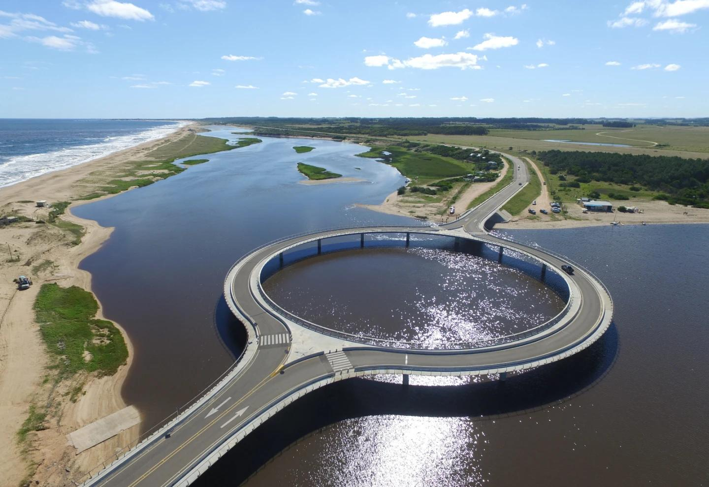
Puente de geometría circular que conecta territorios y permite disfrutar del paisaje natural. Su diseño busca reducir la velocidad de los vehículos y crear una experiencia diferente para peatones y ciclistas.
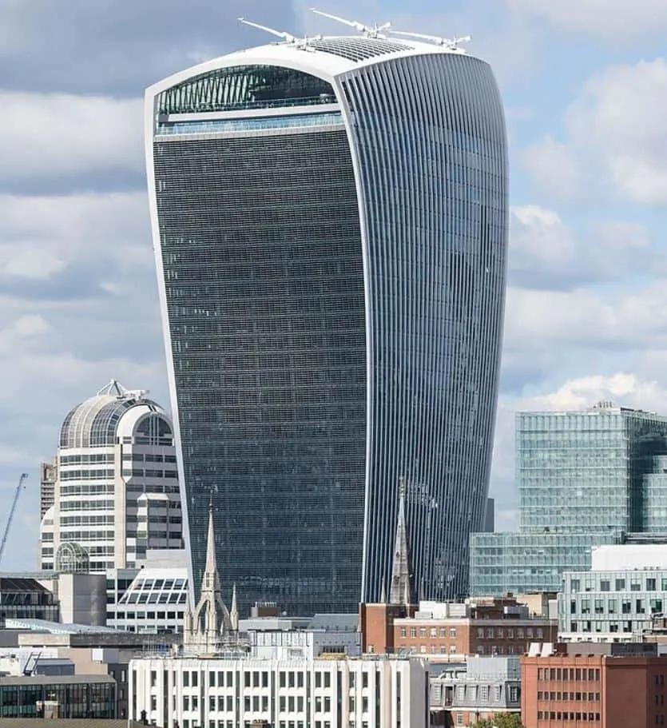
Rascacielos conocido como Walkie Talkie, distinguido por su forma que se ensancha hacia la parte superior y su presencia en el paisaje urbano londinense.
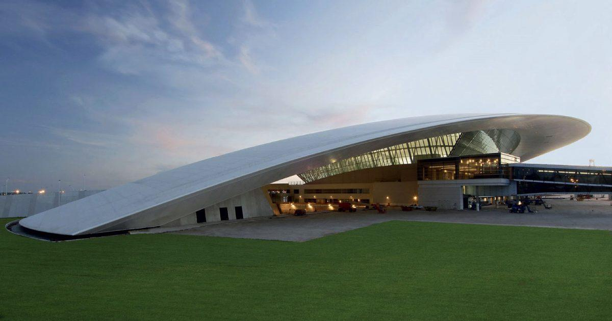
Destaca por su gran cubierta curva y sus espacios amplios y luminosos. El proyecto combina funcionalidad y una imagen contemporánea para uno de los principales accesos a Uruguay.
La voz del arquitecto
Una invitación a conocer al arquitecto más allá de sus edificios.
04 — El concepto
Nuestro altar está inspirado en la trayectoria y el legado de Rafael Viñoly. A través de esta composición buscamos unir la arquitectura contemporánea con la tradición mexicana, creando un homenaje que represente la creatividad, la memoria y la permanencia de las ideas a través del tiempo.
Para desarrollar nuestro concepto, elegimos dos de sus obras más representativas: el Foro Internacional de Tokio, en Japón, y el Puente de la Laguna Garzón, en Uruguay. Aunque tienen funciones y formas diferentes, las unimos para crear un diálogo entre la geometría, el espacio y la naturaleza.
En la parte superior retomamos la estructura del Foro Internacional de Tokio, cuya cubierta evoca la silueta de un barco. Esta forma simboliza el viaje, la exploración y la capacidad de las ideas para atravesar fronteras.
Dentro de nuestro concepto, el barco representa el recorrido profesional de Viñoly y la manera en que sus obras llegaron a distintos países, dejando una huella en la arquitectura internacional. Su posición elevada simboliza la proyección de sus ideas hacia nuevas posibilidades y la continuidad de su legado después de su fallecimiento.
En la parte inferior incorporamos la geometría del Puente de la Laguna Garzón, una obra que destaca por su forma circular y su relación con el paisaje natural.
El círculo simboliza la continuidad, la unión y el movimiento constante. En nuestro altar representa la conexión entre el pasado y el presente, así como la permanencia de las ideas de un arquitecto a través de sus obras. También expresa cómo la arquitectura puede conectar personas, lugares y experiencias.
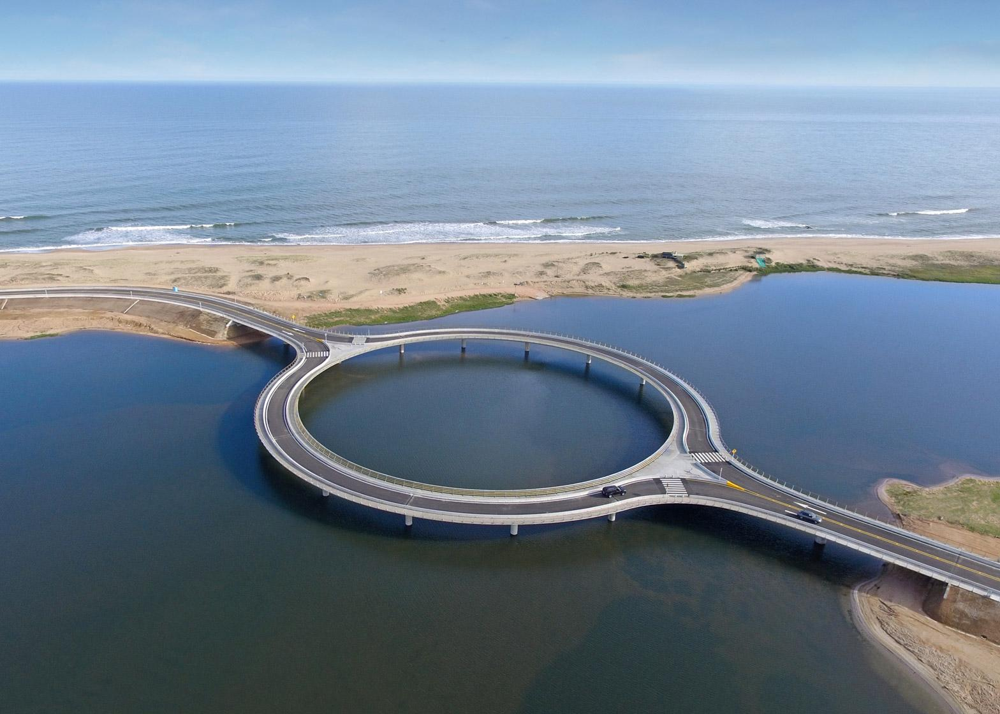
El agua es un elemento fundamental de nuestra propuesta. Mediante su representación en el suelo buscamos recrear el entorno del puente y generar un efecto de reflejo con las luces de la estructura superior.
Este recurso crea una relación visual entre ambas obras, como si el barco y el puente se encontraran en un mismo paisaje. Simbólicamente, el agua representa el reflejo, la transformación y la memoria: aquello que cambia con el tiempo, pero conserva una huella de lo que estuvo presente.
Así buscamos crear un encuentro entre el cielo y el agua, representando la relación entre lo material y lo simbólico, entre las obras que construimos y las ideas que permanecen en nuestra memoria.
Representan la memoria, el recuerdo y el camino simbólico que une a los vivos con quienes han dejado una huella en el mundo. Su color contrasta con los materiales arquitectónicos y conecta el altar con la tradición mexicana.
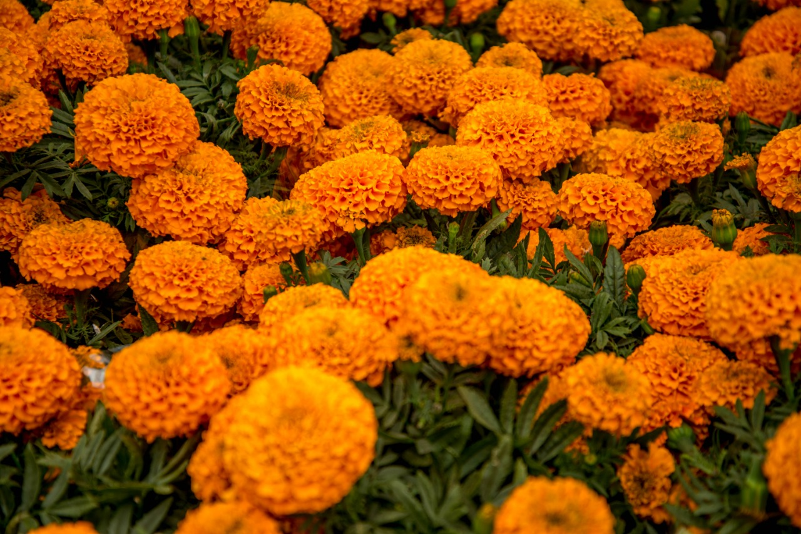
Representa la dimensión espiritual de la ofrenda y conecta nuestro proyecto con las tradiciones del Día de Muertos.

Personaliza el homenaje y nos permite recordar al arquitecto detrás de las obras, reconociendo su trayectoria y su manera particular de interpretar el mundo.
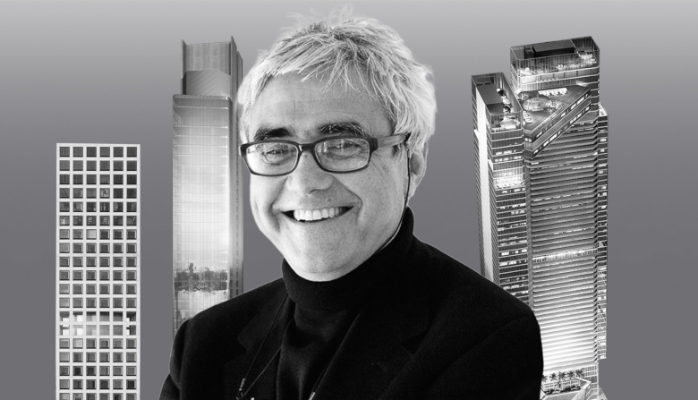
Simbolizan la observación y la mirada creativa, así como la capacidad de imaginar nuevas formas y transformar ideas en espacios arquitectónicos.
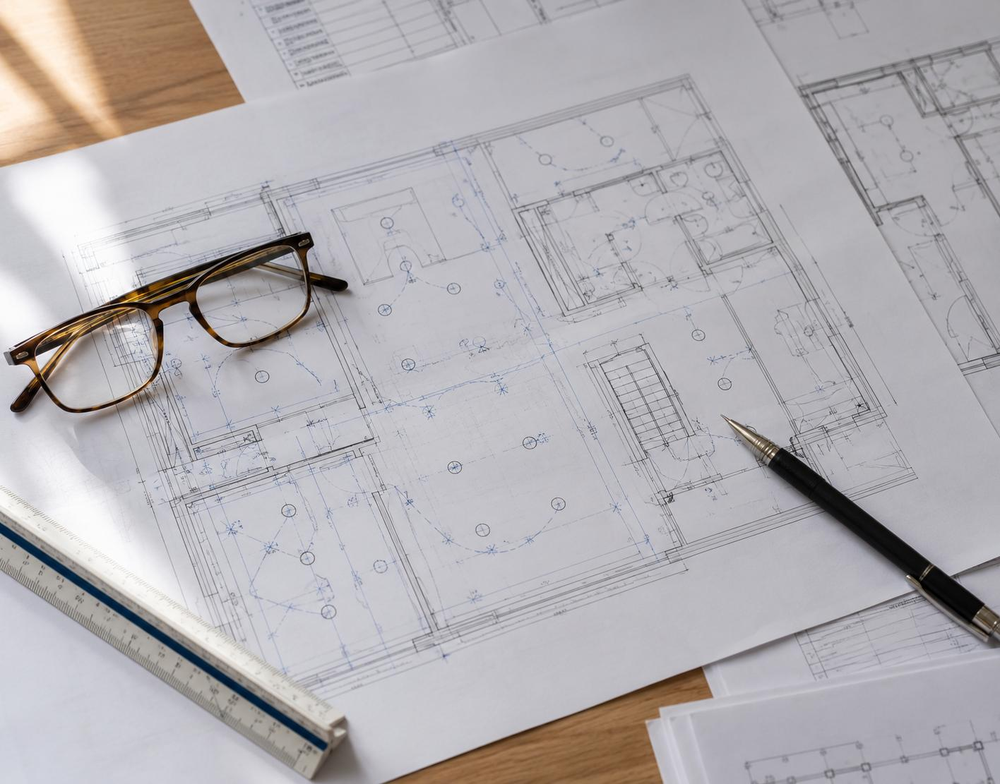
Representa la creatividad y la relación entre la arquitectura y otras expresiones artísticas. Su presencia aporta una dimensión sensible al homenaje y recuerda que el arte puede transmitir emociones e ideas.
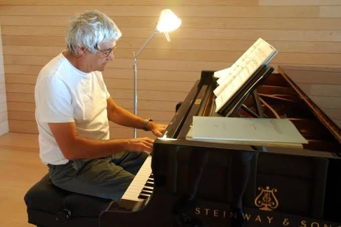
Elegimos estas dos obras porque muestran cómo una misma visión arquitectónica puede manifestarse mediante formas diferentes y, aun así, mantener una identidad propia.
Más que reproducir dos edificios, quisimos establecer un diálogo entre ellos: el barco representa el viaje y la proyección hacia el futuro; el círculo, la continuidad y la conexión; el agua, el reflejo y la transformación; y el cempasúchil, la memoria y la trascendencia.
La unión de estos elementos busca demostrar que la arquitectura no se limita a los materiales ni a las estructuras que permanecen físicamente. También vive en las experiencias que genera, en las ideas que transmite y en la huella que deja en las personas.
Con este altar rendimos homenaje a Rafael Viñoly, recordando que, aunque el tiempo transforma todo lo que nos rodea, las obras y las ideas capaces de inspirar a otros pueden continuar viajando de generación en generación.
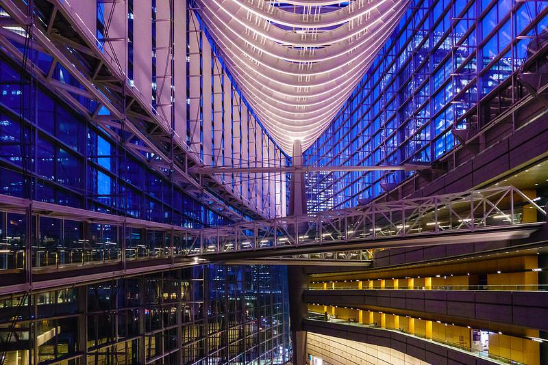
05 — Legado
Rafael Viñoly dejó una huella importante en la arquitectura contemporánea mediante proyectos que integran creatividad, ingeniería y expresión espacial.
Su legado nos invita a comprender la arquitectura como una disciplina que va más allá de la construcción: es una forma de transformar el entorno, generar experiencias y comunicar ideas.
Sus obras continúan presentes en los espacios que las personas recorren, utilizan y contemplan alrededor del mundo.
“Las obras pueden tener un principio y un final, pero las ideas que dejan en el mundo continúan viajando a través del tiempo”.